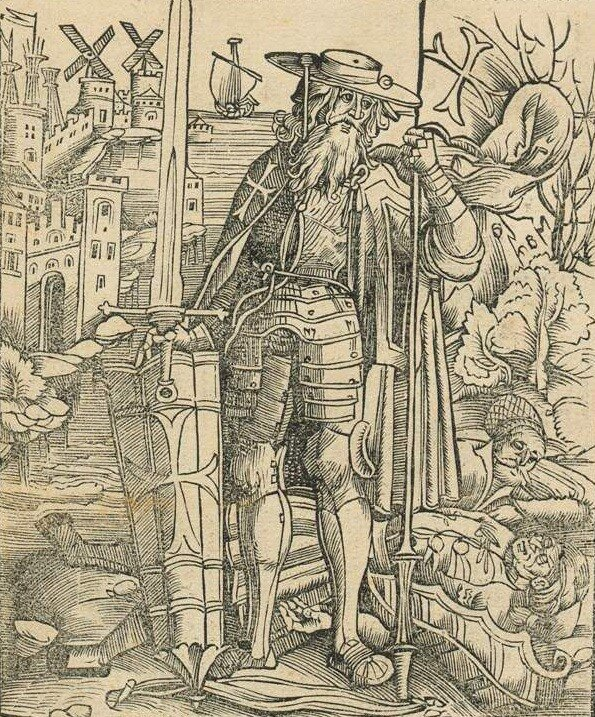

Скажем несколько слов о пребывании госпитальеров на Родосе. Находились они там 213 лет, до 1523 года, срок немалый, чтобы оставить след в истории Восточного Средиземноморья. Все это время госпитальеры были занозой, постоянным раздражителем для мамлюков и турок-османов.
Вот карта завоеваний турок-османов в XIV-XVII вв., взята она из третьего тома Морского атласа. Вдоль и поперек ее расчертили синие стрелы победоносных походов турецких войск. И только два островка на этой карте – Родос и Мальта, окруженные синим кольцом осады, как полюсы магнита притягивают к себе все силы, способные сопротивляться нашествию. И это продолжается не год, и не два – более двух столетий.
|
| (Можно посмотреть в большем размере) |
На протяжении всего периода оставался острым вопрос увеличения численности членов ордена на Родосе и других островах Додеканесского архипелага. В мае 1313 года руководство госпитальеров дало возможность всем латинянам получить владение на неограниченный срок земельными участками, захваченных у турок и греков, в обмен на обязательство вступить на военную службу и переехать на Родос со всей семьей. Особое внимание уделялось тем, кто участвовал в постройке или оснащении военных галер, или как их называли госпитальеры того времени – lignum armatum , или становился членом их экипажей. Призывы эти не остались без ответа. Вот один из примеров. В 1316 г. семья Assanti с острова Искья (у входа в Неаполитанский залив) получила в ленное владение остров Нисирос (Nisyros, к югу от острова Кос) в обмен на обязательство построить и вооружить галеру. Правда, надо сказать, что наслаждалась этой собственностью семья недолго. В 1341 году магистр ордена лишил Лигорио Ассанти владения на о. Искья по той причине, что остров стал «притоном для грабителей» и корсаров, из-за чего сильно испортились отношения ордена с королем Кипра Гуго IV.
Кадровый голод испытывал и создаваемый родосскими рыцарями флот. На первом этапе строительства флота приоритет был отдан купеческим и транспортным галерам для перевозки из Европы необходимых материалов и продовольствия. В качестве моряков на эти галеры удалось привлечь коренных родосских жителей, знающих морское ремесло. Сами рыцари, в основном из обедневших дворянских фамилий Франции, пока для флота представляли небольшой интерес по причине полной некомпетентности в морском деле. Одновременно со строительством своего флота госпитальеры продолжали использовать корабли из Прованса, Сицилии, Венеции и, особенно, Генуи. Правда, венецианцы оказывали помощь весьма неохотно. В результате, на протяжении почти всего четырнадцатого столетия госпитальеры имели возможность отправлять в рейды по три-четыре галеры, оставляя одну-две для защиты Родоса. В упоминавшемся уже ранее проекте крестового похода, представленного папе Иоанну XXII, который подготовил около 1320 г. венецианский государственный деятель и известный географ Марино Сануто Старший, прозванный Торчелло, полагалось, что для полной блокады торгового мореходства мусульманских флотов достаточно 10 галер, две из которых должны были предоставить госпитальеры. Вообще-то Сануто не жаловал иоаннитов. Он считал, что имея ежегодный доход со своих левантийских владений в размере более 180 тысяч флоринов, госпитальеры тем не менее не в состоянии поставить более двух-трех галер для кампании, что свидетельствует о коррупции в рядах ордена. Неодобрительно он отзывался и о предоставлении гаваней Родоса для международного пиратства. И все же Магистру ордена того времени Элиону де Вильнёву, (Helion de Villeneuve, 1319—1346), удалось уладить все финансовые проблемы и почти полностью погасить долги ордена.
Госпитальерам приходилось вести войну на два фронта: с египетскими мамлюками и турками-османами. Хотя и мамлюки и османы были заинтересованы в совместной борьбе с христианами в восточном Средиземноморье, единства между ними не было. Чтобы не возвращаться больше к мамлюкско-османским отношениям, отметим, что как правило они не вступали между собой в открытые столкновения, предпочитая добиваться своих целей через своих союзников. Однако в 1486-1491 гг. прямого столкновения избежать не удалось. В этой войне победили мамлюки, благодаря более удачному использованию артиллерии. Но это была последняя их победа. Действия португальцев, появившихся к тому времени в Индийском океане, по блокаде морских коммуникаций Египта, проходящих через Красное море, и срыву поставок восточных пряностей в Египет, сделали свое дело. Ресурсы мамлюков были истощены. В 1516 г. турецкий султан Селим I Грозный напал на Египет. Эта военная кампания была объявлена турками священной войной – джихадом. У турок было численное превосходство и лучшее по сравнению с мамлюками материально-техническое обеспечение. Кроме того в рядах мамлюков появилось очень большое количество предателей и дезертиров. Последний мамлюкский султан Туман-бей был повешен на воротах Каира, а Селим после присоединения к своей империи Египта и Сирии, первым из турецких султанов стал именовать себя «Халифом Ислама».
Некоторые историки военную активность госпитальеров в их родосский период сводят только к защите христианского судоходства, положительно оценивая их деятельность. Они заявляют, что только благодаря госпитальерам идея Крестовых Походов надолго пережила сами Крестовые Походы, что более двухсот лет Орден фактически в одиночку защищал берега Европы от ужасов пиратских набегов. Однако мы не будем столь односторонними в оценках. В документах той поры можно встретить отзывы о родосских рыцарях как о "пиратах во Христе". Госпитальеры были пиратами и морскими разбойниками не меньше, если не больше алжирцев, турок, египетских мамлюков и прочих мусульман.
Они многократно совершали набеги на мусульманские города, грабя их и увозя жителей в рабство. Широко практиковался захват знатных заложников с возвратом за выкуп. Корабли госпитальеров ходили не только в Средиземном море. Они совершали набеги и на западное побережье Африки
В 1345 году Орден изгоняет турок из Смирны ( современный Измир) и захватывает южную часть Малой Азии, а в 1365 с помощью войск христианских королей - и Александрию. Это открывало христианским странам торговые пути в Египет и на Восток.
О реакции Османского султаната на эти действия иоаннитов расскажем в следующий раз.